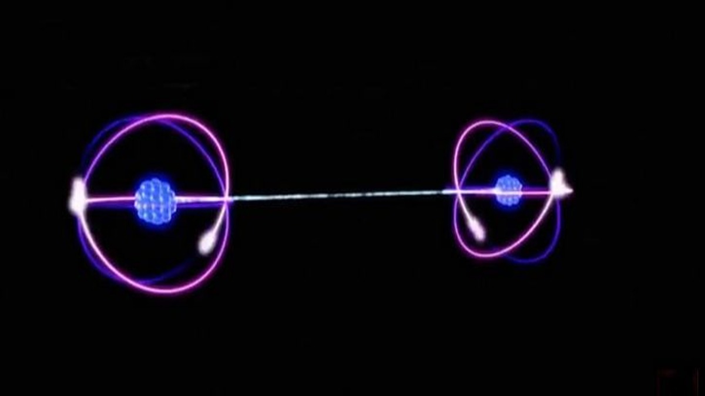

Explicación Basica.
La mecanica cuantica es una disciplina de la fisica que pretende estudiar fenomenos subatomicos.Las interacciones de la mecanica cuantica son contraintuitibas a la mecanica clasica,ya que muchos fenomenos son inmedibles,o escapan al entendimiento o conozimiento actual.
Nicolas Pulido Pamia 3ESOC.